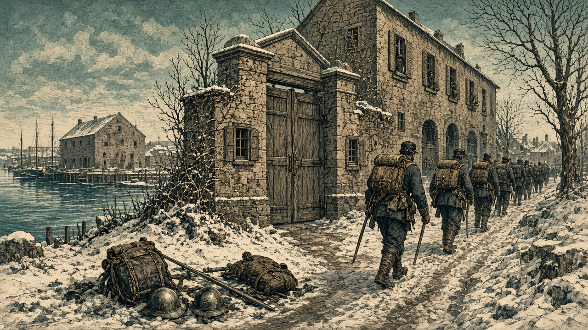

帝都の門前で帝国歩兵が玉砕
カペレナは黒潮の農場を奪い、黄砂は北の丘で一隊を失う
主要都市の陥落はなし だが各地で守備部隊が消え、食糧と兵站が奪われた週

【総合部】第148期、どの国の首都も名のある都市も新たには落ちなかった。しかし戦況が静かだったわけではない。セントラ大陸では泰平天国が帝都アルガリストの門前で帝国の守備部隊を全滅させ、北方ではカペレナ王国が黒潮自治国の農場を奪って食糧5万トンを徴発、同じ北の丘では黄砂同盟の一隊がオリョルッル王国の砲火で消えた。都市の旗はどこも変わらぬまま、その都市を支える兵と糧が削られていく、消耗の一週となった。
泰平軍はアルガリスト帝国の帝都に隣接する地点で、帝国第4軍の歩兵部隊を攻め、これを玉砕させた。さらに都の東に広がる森の兵站基地を占領し、そこに蓄えられていた予備兵1,000人が投降した。帝都そのものは今期も帝国の手にあるが、都を守る兵の供給源が一つ断たれた形である。帝国は停戦を打診し続けているが、泰平はなお攻勢をゆるめていない。
北方の谷あいでは、カペレナ王国が黒潮自治国の農場を占領し、蓄えられていた食糧5万トンを奪った。黒潮は近隣の二つの地点で守備部隊を相次いで失っており、首都アルヴェナを抱えた谷の防衛線は細りつつある。王国は記者クラブで「黒潮残党はふたたび逃亡し、王国軍は北へ進んで農場に入った」と戦況を誇示した。一方、同じ週にカペレナ国内では工場が火災で全壊しており、王国政府は別に「黒潮の工作員による放火の疑い」と述べている。ただし、この火災を工作員の仕業と裏づける材料は本紙の取材では得られていない。
さらに北の丘陵では、オリョルッル王国の砲兵と歩兵が黄砂同盟の第3方面軍歩兵を包囲し、これを全滅させた。黄砂もただちに同じ丘へ部隊を置き直したが、広大な版図と兵力を誇るオリョルッルに対し、国力で大きく劣る黄砂の守勢は変わらない。
三つの前線に共通するのは、都市の占領ではなく「都市を支えるもの」の喪失だ。帝国は兵站と予備兵を、黒潮は食糧と守備隊を、黄砂は一個部隊を失った。攻める側はいずれも停戦には応じず、守る側は都を抱えたまま出血を強いられている。都市が落ちない膠着の裏で、戦争は確実に守備側の体力を奪っている。
移民2件、2つの国へ3万4,700人
【社会部】藍岬共和国連邦から桃谷連邦共和国へ1万9,400人、青海共和国から胡椒帝国へ1万5,300人が、仕事を求めて移り住んだ。桃谷の人口は11万4,800人に、胡椒は12万6,000人に増えた。胡椒ではこの受け入れで働き手の不足が解消している。詳報は5面。